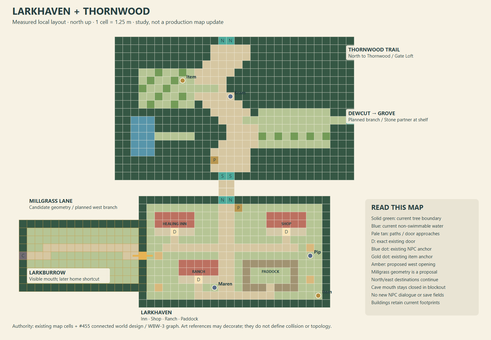
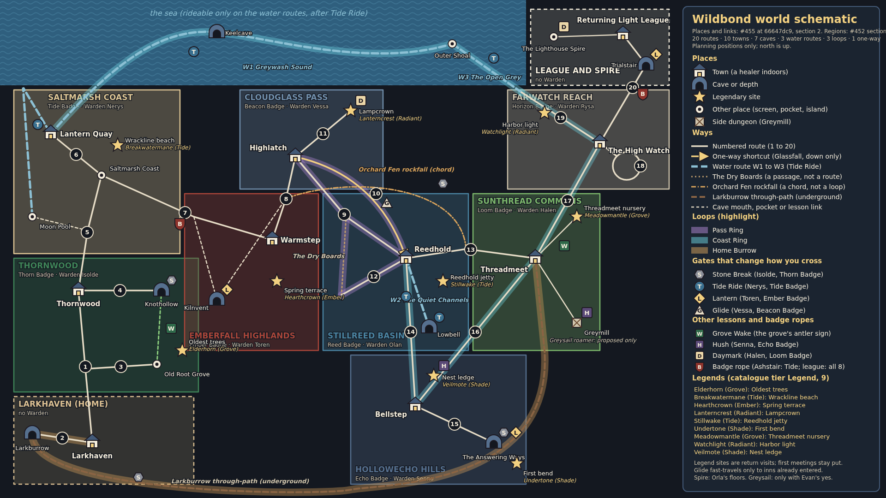
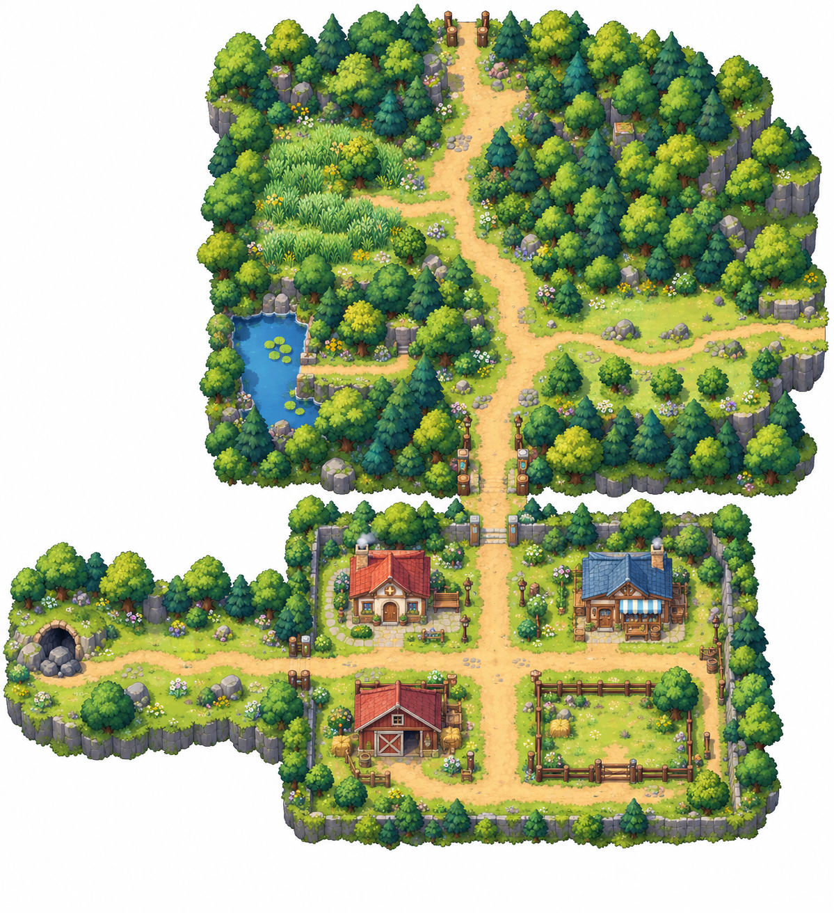

The grid governs doors, routes and collision. Amber is proposed geometry. Millgrass leads to the visible Larkburrow mouth; the later connection to Threadmeet requires Stone Break and the Loom Badge. The eastern trail branch becomes Dewcut, retaining a Stone-partner shelf into Old Root Grove.

Reused from the existing #455 / #465 world design. Stillreed is the regional hub. The graph has 46 mapped places and 54 links (Glassfall is counted as a route/link, not another map). Cave loops, water routes and return paths are planning data, not claimed playable connections.

Mood, materials and atmosphere only. A painted tree, road bend or roof never overrides the measured grid or regional graph. This image is not a screenshot of an implemented location.
Plan and implementation notesReusable location briefWalkable blockout controls